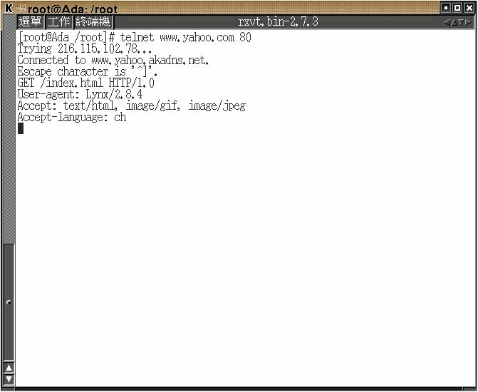
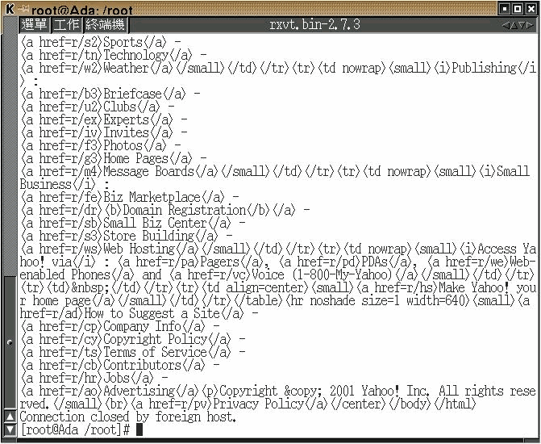
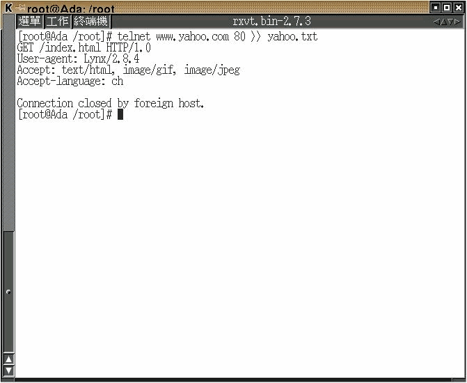
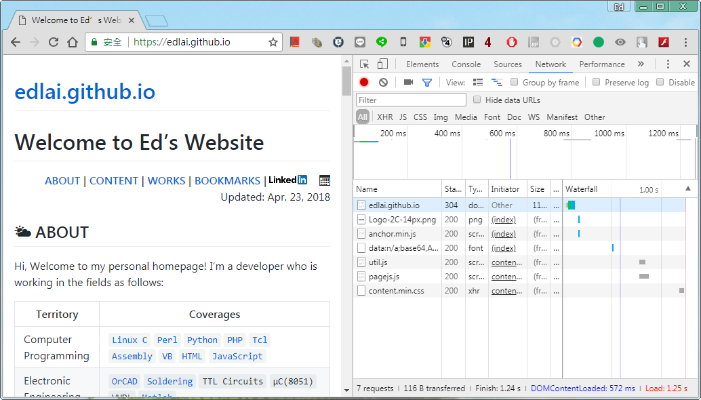

HyperText Transfer Protocol (HTTP)
Do the HTTP experiment as explained in the lecture.
- At last try to get a html file, show your process and partial result (no need to print all stuff you get to hand in).
- You are welcome and hand them in for grading (refer to RFC2068 if you want).
Concept
Users use below application
- Web Browsers (e.q. Microsoft
Internet Explorer; NetscapeNavigatorand so on) to access the Web Services.
but we will not use any client-side application to access above HTTP Services, instead of telnet. It will help us to know more detail of HTTP protocol.
Requirements
- Red-Hat Linux 6.2 + KDE/X-window
- Perl/TK
Telnet
Step-by-Step by telnet
- Issue below command on Terminal to access Yahoo Website
telnet www.yahoo.com.tw 80
- Issue below HTTP commands talking with Yahoo Website to fetch Web content
index.html
| # | PROMPT | DESCRIPTION |
|---|---|---|
| 1 | GET /index.html HTTP/1.0 ⏎ | GET index.htm page using HTTP/1.0 property |
| 2 | USER-agent: Lynx/2.8.4 ⏎ | Tell Yahoo server our client-side application is Lynx |
| 3 | Accept: text/html, image/gif, image/jpeg ⏎ | This client accepts html, gif and jpeg format images |
| 4 | Accept-language: ch ⏎ | The http client is able to accept ch language, according to RFC1766 |
| 5 | Enter Enter ⏎ | Press two Enter keys |
Screenshots of running telnet
- Initial the connection to
yahoowebsite, and issue the HTTP commands to grabindex.htmlpage

- It'll display the HTML result on Terminal

- User can also save
index.htmlto the fileyahoo.txtby using Shell command
telnet 140.124.13.2 80 >> yahoo.txt`

- Check the result by reading file
yahoo.txt(the sameindex.html) by using Shell command also
cat yahoo.txt | more

- Users can read the file
yahoo.txtby using Web Browser also
A Tiny Browser
Proposal
- Basic Concept:
- 使用 Socket 開啟遠端的 http port (80),讀取其 網頁檔案,剖析 其檔案內容的 HTML tag , 並將之轉成 給瀏覽器的所看到的外觀 。
- Current Status:
- 目前只能剖析基礎的 A tag(超連結 Tag) .
- Languages used:
- Perl (GUI framework is Tk) .
- Screenshot:
- 於網址處輸入欲連結網址即可讀取該網頁檔案，讀取後,游標移到有超連結功能處顏色會改變,按一下後,即可連結到該網頁並開啟。

Programming
#!/usr/local/bin/perl
################################### webget.pl ###############################
# Proposal: a tiny browser
#
# Description: 1. 初級功能
# 2. 連線 HTTP Server 後
# 3. 取得 Html Tag 做出 <A> tag (超連結) 的功能
#
# Usage: 1. Unix-like OS
# 1.1 install Perl on Unix-like OS (Unix ,Linux ,Free BSD ,Sun..)
# 1.2 invoke Terminal mode on Xwindow
# <s9360511@sun:~/task/ss>[46] chmod 755 webget.pl (chmod to 755)
# <s9360511@sun:~/task/ss>[48] ./webget.pl (Running)
#
# 2. MS Windows 平台
# 2.1 需先安裝 Perl(www.perl.org)
# 2.2 在直接按本檔案啟動或進入 MS-DOS 底下啟動
# C:\>perl webget.pl (以 Perl直譯 本程式檔)
# ^^^^ ^^^^^^
# 直譯器 本程式
#
# Limitation: 1. A tag 功能 並不完全
# Reference:
# Issue :
# History: n/a
###############################################################################
use Tk;
use IO::Socket;
$FONT='#a0b7ce';
###############################################################################
## GUI Layout [ Start ]
###############################################################################
$mw = MainWindow->new;
$mw->title("Perl 瀏覽器");
$f = $mw->Frame->pack(-side => 'top', -fill => 'x');
# IP Address/or URL
$f->Label(-text => "網址:")->pack(-side => 'left', -anchor => 'w');
$f->Entry(-textvariable => \$url_name)->pack(-side => 'left', -anchor => 'w', -fill => 'x', -expand => 1);
# Button
$f->Button(-text => "Exit", -relief=>'ridge',-command => sub { exit; } )-> pack(-side => 'right');
$f->Button(-text => "首頁", -relief=>'ridge',-command => \&home_web)-> pack(-side => 'right', -anchor => 'e');
$f->Button(-text => "連結", -relief=>'ridge',-command => \&link_web)-> pack(-side => 'right', -anchor => 'e');
# Display Area
$t =$mw->Scrolled(qw/Text -setgrid true -width 60 -height 24 -scrollbars e -wrap word/, -font => $FONT);
$t->pack(qw/-expand yes -fill both/);
# Set up display styles
my(@bold, @normal, $tag);
if ($mw->depth > 1) {
@bold = (-background => '#43ce80', qw/-relief raised -borderwidth 1/);
@normal = (-background => undef, qw/-relief flat/);
} else {
@bold = (qw/-foreground white -background black/);
@normal = (-foreground => undef, -background => undef);
}
MainLoop;
###############################################################################
## GUI Layout [ End ]
###############################################################################
# ................... Access Website ........................................
sub link_web {
@ARGV= split /\//,$url_name;
&show_page;
}
# .............. Default Portal Site is "www.yahoo.com.tw" ................
sub home_web {
@ARGV= qw(www.yahoo.com.tw /index.html);
&show_page;
}
sub linkSite{
@ARGV=@_;
$_=$ARGV[0];
s#/##;
$ARGV[0]=$_;
$ARGV[1]="/index.html";
$t->delete("1.0", "end");
&show_page;
}
# ........... Grab the http pages from http server ......................
sub show_page {
## 下方顯示連接網址
$info = "目前連接 '$url_name'";
## 清除顯示區
$t->delete("1.0", "end");
## 檢查網址是否正確
unless (@ARGV > 1 ) { die "usage: $0 host document ...\n" }
$host = shift( @ARGV);
foreach $document (@ARGV) {
#使用 socket 連接 http server
$remote = IO::Socket::INET->new(Proto => "tcp",PeerAddr => $host,PeerPort => "http(80)",);
unless($remote){ die "cannot connect to http daemon on $host"}
$remote->autoflush(1);
## 與 http 交談 抓取網頁
print $remote "GET /$document HTTP/1.0\n\n";
$counter=0;
#使 HTML 的 A Tag 作用
while(<$remote>){
#去掉 A Tag 中不用顯示的字元
if (index($_,"<a href=")==0) {
~s#<a href="http://##;
$where=index($_,">");
$tt1=substr($_,0,($where-1));
~s#$tt1">##;
$where=index($_,"</a>");
$tt2=substr($_,0,$where);
$counter++;
$aTag{'d'.$counter}=$tt1;
$t->insert('end', $tt2."\n", 'd'.$counter);
}#目前其他的 HTML Tag 直接顯示
else{$t->insert("end", $_);}
}
# ................ Display A tag ...................................
foreach $tag (%aTag) {
## 顯示 A tag 並且游標移到 A tag 會將 該 A tag 字串背景變成 綠色
$t->tag('bind', $tag, '<Any-Enter>' =>sub {shift->tag('configure', $tag, @bold)});
$t->tag('bind', $tag, '<Any-Leave>' =>sub {shift->tag('configure', $tag, @normal)});
## 使 A tag 超連結 功能生效
$t->tag("bind",$tag,"<1>" => sub {&linkSite($aTag{$tag})});
}
$t->mark(qw/set insert 0.0/);
close $remote;
}
}
Advanced
- User can press F12 to observative how Chrome works step-by-step.

$author: Jin-Wen (Ed) Lai
$date: Oct. 2001
$revised: Mar. 2018
$keywords: computer, networks, network, http, RFC.